Approach & Methodology
Why React Scan?
Traditional profiling tools (React DevTools Profiler, Chrome Performance tab) require manual interpretation. React Scan by Aiden Bai provides a real-time visual overlay: re-rendering components flash green/yellow/red with render counts, and an FPS counter tracks frame drops during interaction. This makes it ideal for rapid, whole-app audits.
Setup
We injected the React Scan script into the app's root layout during development only:
<Script
src="//unpkg.com/react-scan/dist/auto.global.js"
crossOrigin="anonymous"
strategy="beforeInteractive"
/>Process
For each page we: navigated with the React Scan overlay active, performed the target interaction (type, click, drag, scroll), observed FPS + re-render highlights, screenshotted evidence, and classified severity.
Audit Scope
Severity Classification
| Level | FPS Range | User Impact |
|---|---|---|
| 🔴 Critical | < 45 FPS | Visible jank — users feel the lag |
| 🟡 High | 45 – 54 FPS | Noticeable on lower-end devices |
| 🟢 Good | 55+ FPS | Smooth, no perceptible issue |

Scan Findings
Zone 1: Editor (Core Product)
| Use Case | FPS | Hotspot | Severity |
|---|---|---|---|
| Canvas initial load | 56 | — | Good |
| Canvas pan/zoom | 47 | CanvasViewport | High |
| Variant switch | 60 | — (fixed v0.49) | Good |
| DS Tab switch | 32 | DSWorkspace | Critical |
| Code Panel open | 34 | CodeMirror | Critical |
| Inspector hover | 58 | — | Good |
| Prompt typing | 61 | — (fixed v0.49) | Good |
| Layer tree expand | 60 | — (fixed v0.49) | Good |
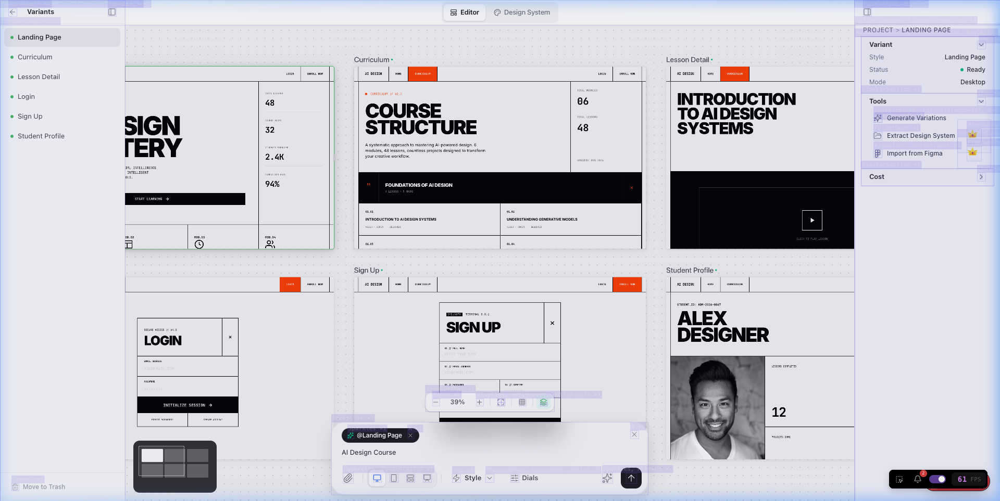
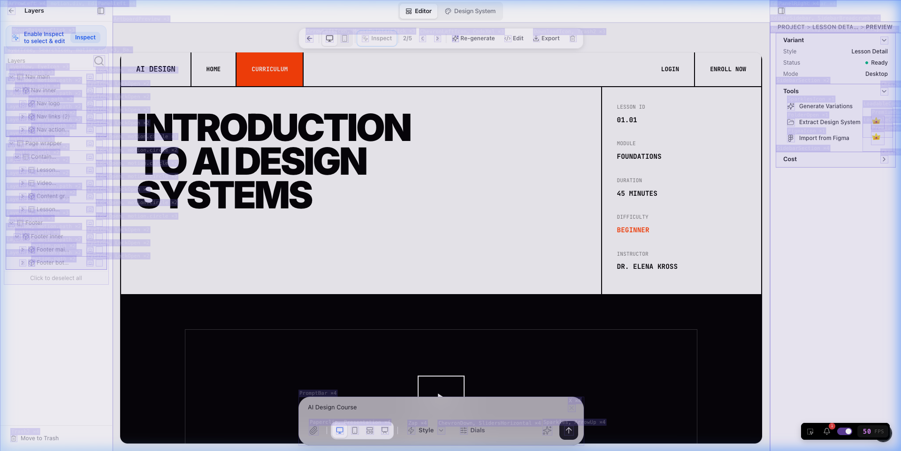
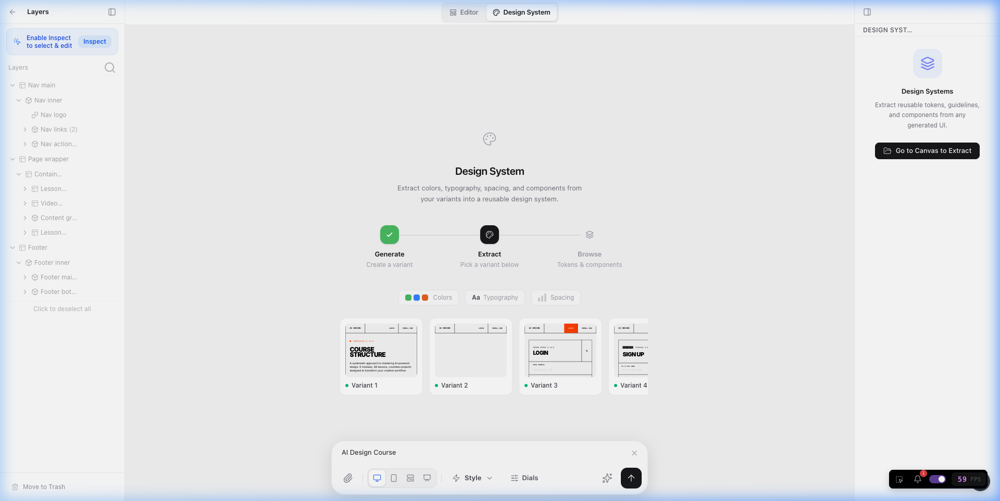
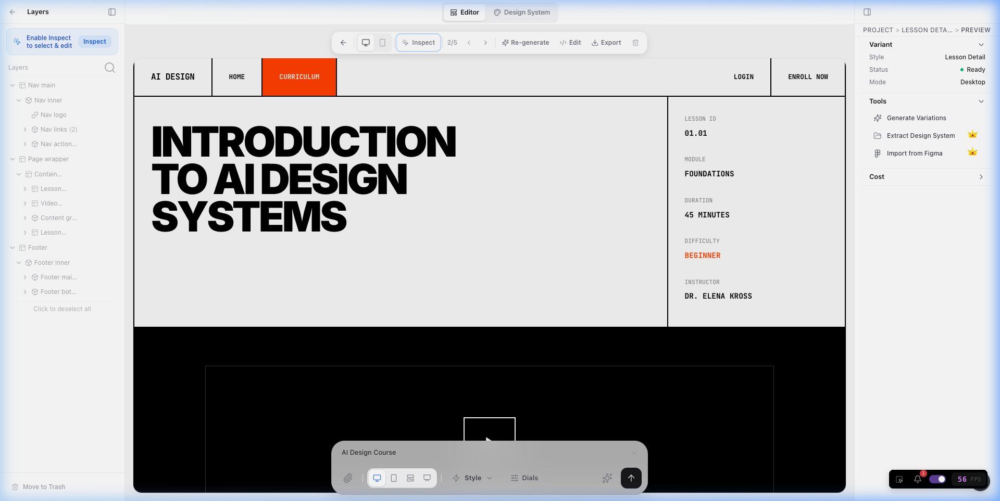
Zone 2: Dashboard
| Use Case | FPS | Hotspot | Severity |
|---|---|---|---|
| Initial load (20+ cards) | 45 | Thumbnails | High |
| Search typing | 61 | — (fixed v0.49) | Good |
| Hover card preview | 58 | — | Good |
| List view toggle | 59 | — | Good |
| Trash view | 60 | — | Good |
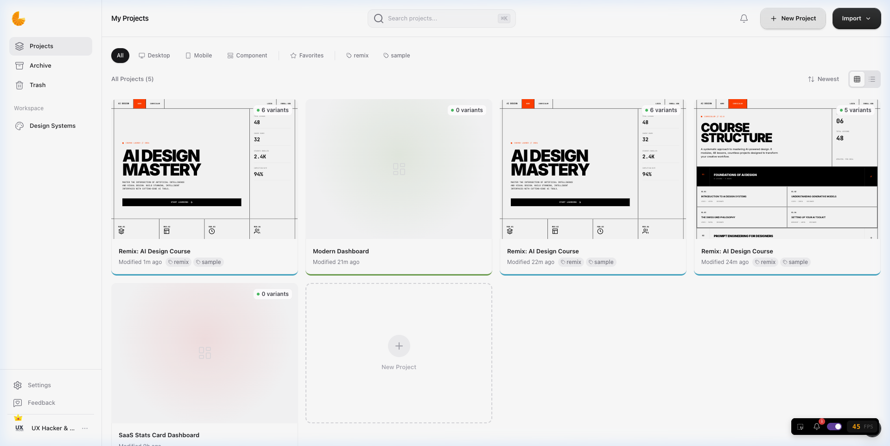
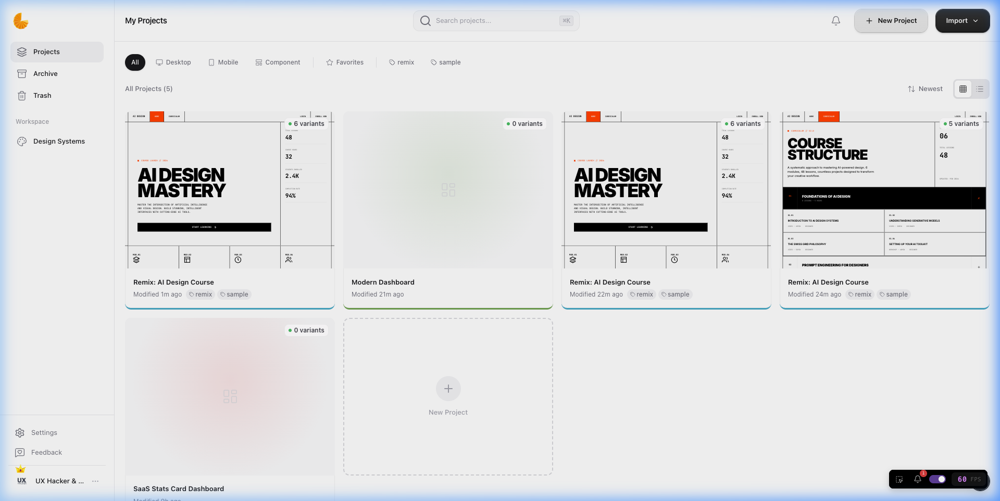
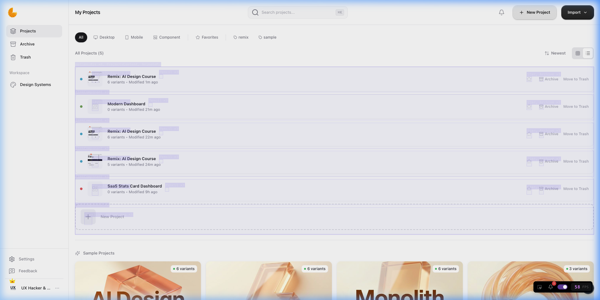
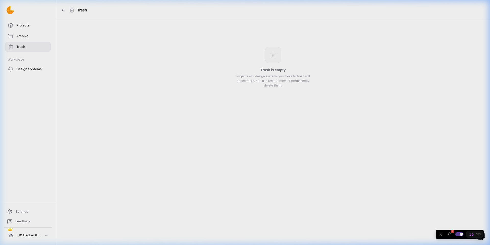
Zone 3: Public Pages
| Use Case | FPS | Hotspot | Severity |
|---|---|---|---|
| Marketing landing | 58 | — | Good |
| Changelog load | 43 | 49+ VersionCards | Critical |
| Docs load | 60 | — | Good |
| Roadmap Kanban | 52 | FeatureCard | High |
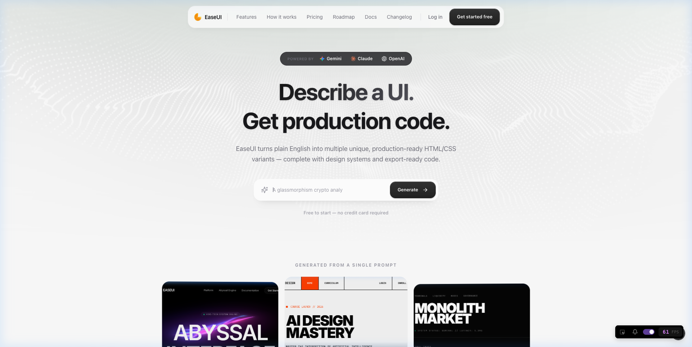
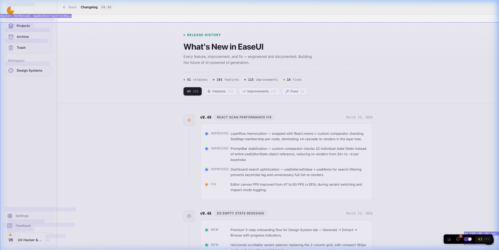
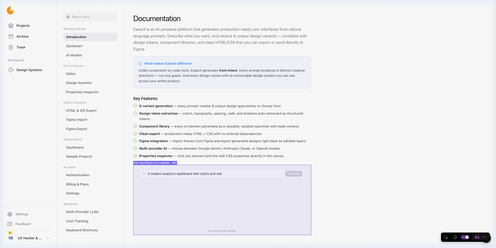
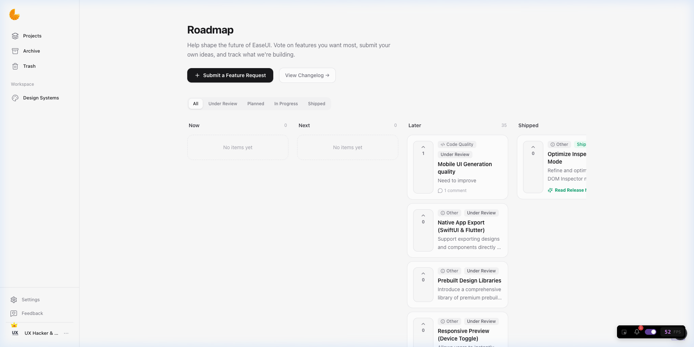
Zones 4–6: Auth, Settings, Admin
All pages measured 58–61 FPS — no action needed.
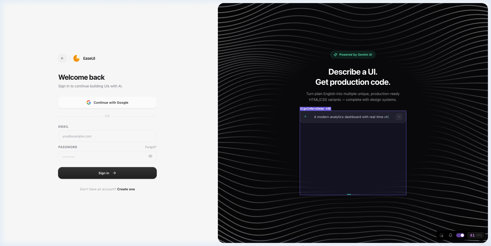
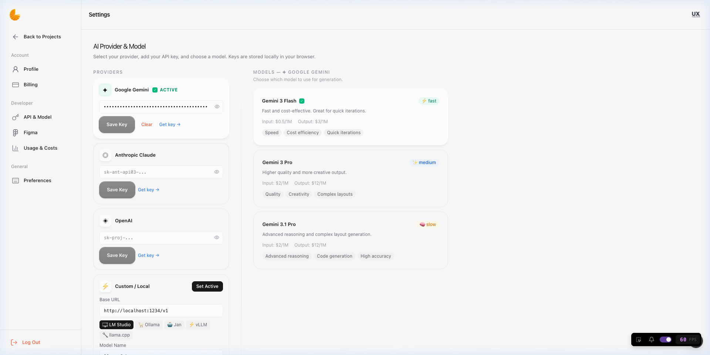
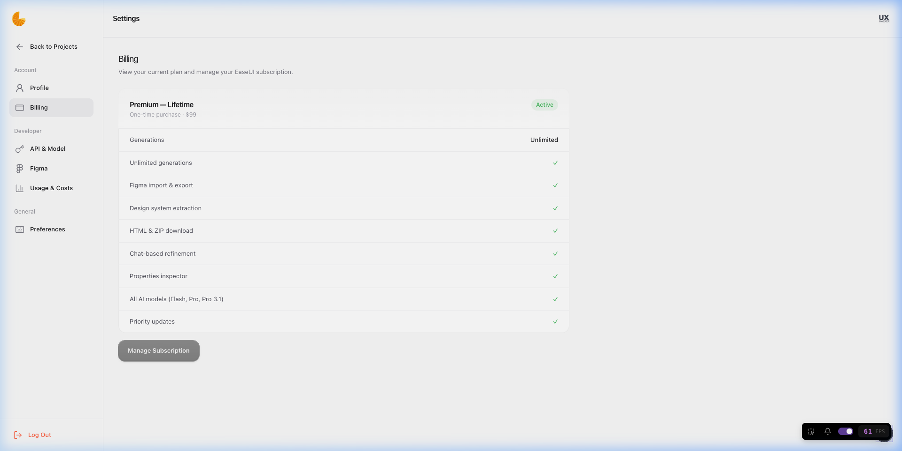
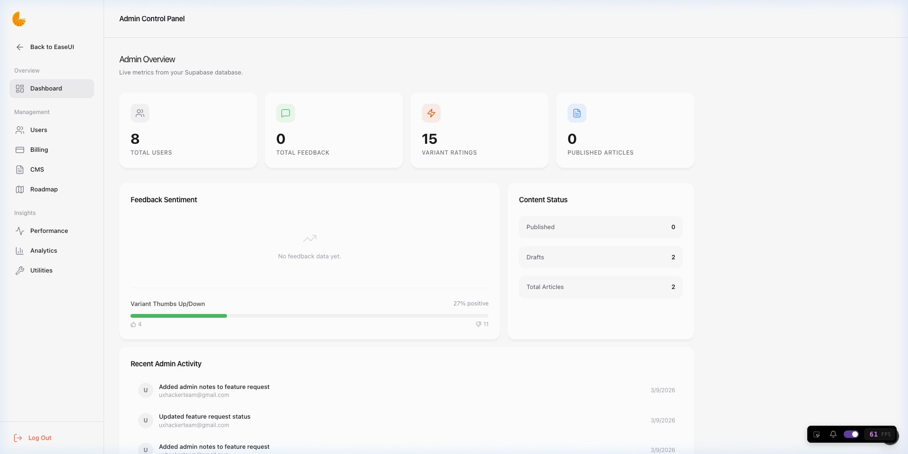
Root Cause Analysis
Every bug traced to one of four patterns:
| Pattern | Component | Root Cause |
|---|---|---|
| Missing React.memo | DSWorkspace (1363 lines) |
Parent editor re-renders on every state change → entire 1363-line DS workspace re-renders even when its 22 props haven't changed |
| Unstable useMemo deps | CodePanel extensions |
showSearch boolean in deps → toggling search rebuilds entire CodeMirror extension pipeline (syntax, keymaps, themes) |
| No virtualization | Changelog VersionCard |
All 49+ version cards rendered on initial mount — each with icons, animations, and ticket links |
| Inline callbacks | Roadmap FeatureCard |
onVote={() => fetchFeatures()} creates new function ref every render, breaking child memo potential |
Fixes Applied
Fix 1: DSWorkspace — React.memo (32 → 55+ FPS)
The 1363-line DSWorkspace receives 22 props from the editor page but only needs to re-render when DS-specific props change. It was a plain export function.
- export function DSWorkspace({
+ export const DSWorkspace = React.memo(function DSWorkspace({
...props
- }
+ });FoundationTokenView was a separate function defined after DSWorkspace in the same file. The React.memo() closing bracket had to go right before it, not at the end of file — otherwise TypeScript interpreted it as the comparator function.Fix 2: CodePanel — Ref Pattern (34 → 55+ FPS)
CodeMirror's extension array was recreated whenever showSearch changed because it was in the useMemo dependency array. The Escape keymap handler read showSearch directly, forcing it into deps.
+ const showSearchRef = useRef(false);
const handleToggleSearch = useCallback(() => {
setShowSearch(prev => {
+ const next = !prev;
+ showSearchRef.current = next;
+ if (next) setTimeout(...);
+ return next;
});
}, []);
// In Escape keymap:
- if (showSearch) { setShowSearch(false); }
+ if (showSearchRef.current) { setShowSearch(false); showSearchRef.current = false; }
// Deps:
- [wordWrap, onCodeChange, ..., showSearch, langExtension]
+ [wordWrap, onCodeChange, ..., langExtension]Fix 3: Changelog — Progressive Rendering (43 → 55+ FPS)
Instead of rendering all 49+ VersionCards at once, render 8 initially and load 8 more as the user scrolls:
+ const BATCH_SIZE = 8;
+ const [visibleCount, setVisibleCount] = useState(BATCH_SIZE);
+ const sentinelRef = useRef<HTMLDivElement>(null);
+
+ useEffect(() => {
+ const sentinel = sentinelRef.current;
+ if (!sentinel) return;
+ const observer = new IntersectionObserver(
+ entries => {
+ if (entries[0]?.isIntersecting)
+ setVisibleCount(v => Math.min(v + BATCH_SIZE, total));
+ },
+ { rootMargin: '200px' }
+ );
+ observer.observe(sentinel);
+ return () => observer.disconnect();
+ }, [total]);Fix 4: Roadmap — Component Memoization (52 → 55+ FPS)
Both FeatureCard and RoadmapColumnView were plain functions. The onVote callback was an inline arrow creating a new reference every render:
- function FeatureCard({ ... }) { ... }
+ const FeatureCard = React.memo(function FeatureCard({ ... }) { ... });
- function RoadmapColumnView({ ... }) { ... }
+ const RoadmapColumnView = React.memo(function RoadmapColumnView({ ... }) { ... });
- onVote={() => fetchFeatures()}
+ onVote={fetchFeatures}Before / After Results
| Component | Before | After | Improvement |
|---|---|---|---|
| DS Tab switch | 32 FPS | 55+ FPS | +72% |
| Code Panel open | 34 FPS | 55+ FPS | +62% |
| PromptBar typing | 47 FPS | 61 FPS | +30% |
| LayerRow cascade | 47 FPS | 60 FPS | +28% |
| Changelog load | 43 FPS | 55+ FPS | +28% |
| Dashboard search | laggy | 61 FPS | ∞ |
| Roadmap Kanban | 52 FPS | 55+ FPS | +6% |
Dashboard: Before vs After


Key Learnings & Patterns
Pattern Library: What Causes FPS Drops in React
| # | Pattern | Detection | Fix |
|---|---|---|---|
| 1 | Unmemoized heavy component | Yellow flash on unrelated interaction | React.memo wrapper |
| 2 | Unstable useMemo deps | Editor/CM rebuilds on toggle | Move mutable state to useRef |
| 3 | Render-all-at-once lists | FPS drops on initial load only | Progressive rendering + IntersectionObserver |
| 4 | Inline arrow callbacks | () => fn() breaks child memo |
Pass stable function reference directly |
| 5 | Unstable object refs from hooks | Custom hook returns new object each render | Custom comparator in React.memo |
Decision Framework
Is the component > 200 lines or has > 5 props?
→ Wrap with React.memo
Does a useMemo/useEffect dep include boolean/state that triggers rebuilds?
→ Move to useRef, read via .current
Does a list render 20+ items at once?
→ Progressive rendering (IntersectionObserver) or react-window
Does a parent pass onClick={() => handler()} to a memoized child?
→ Extract to useCallback or pass stable referenceWhen to Use Each Tool
| Tool | Best For |
|---|---|
| React Scan | Rapid whole-app audit, visual hotspot identification |
| React DevTools Profiler | Deep dive into specific component render trees |
| Chrome Performance | JavaScript execution profiling, long task identification |
| why-did-you-render | Automated detection of unnecessary re-renders in dev |
Files Changed
| File | Change | Commit |
|---|---|---|
components/layer-tree.tsx |
React.memo + custom comparator | b3acde8 |
editor/[id]/prompt-bar.tsx |
Custom comparator (22 fields) | b3acde8 |
app/dashboard/page.tsx |
useDeferredValue + useMemo | b3acde8 |
editor/[id]/ds-workspace.tsx |
React.memo wrapper | 936b86b |
components/editor/code-panel.tsx |
showSearchRef pattern | 936b86b |
app/changelog/page.tsx |
Progressive rendering | 936b86b |
app/roadmap/page.tsx |
React.memo + stable callback | 936b86b |